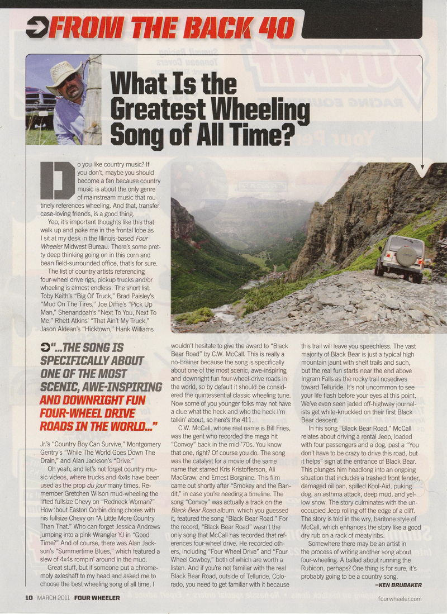

The Legend-News
What We Got Here
In honor of summer, this issue’s first article is an attempt to make lemonade; Then there are some C.W. McCall Sightings, including one by Bill Fries himself; and Ed. the Space Cadet takes a drive along the Lincoln Highway.
About Monday Morning
by Ed. Floden
You’re probably wondering why, when you awoke on the morning of Monday, July 11, that you did not find a copy of The Legend-News in your mailbox. After missing my scheduled publication date of July 4 because of too much partying, I had promised to issue the next issue one week later. But I didn’t.
Funny story about that.
The Spousal Overunit wanted to visit the Bristol Renaissance Faire on Sunday the 10th. Not a problem, I thought, as I could wrap up The Legend-News on Sunday eve before retiring, and everyone would be happy. But that day at the Faire was not the coolest of days, and seven hours of high-80s (Fahrenheit; 30-plus degrees Celsius for the metrically-inclined) took its toll, and upon my return home that evening I felt that relaxation and refreshment were better to be had. I figured that I could paste together the final copy of The Legend-News on Monday morning.
Best laid plans, etc.
I arose early yesterday: at a quarter to seven, which is early for me (I stay up late). With a hot cup of coffee in hand, I sat down at my computer to check my mail and read the news.
The night before, I had moved my waste containers to the curb, anticipating their emptying in the morning. The rumble of a diesel engine and the sound of air brakes alerted me to the arrival of the first waste disposal truck, which picked up the non-recyclable trash in the ninety-gallon (340 liter) wheeled bin.
I raised the windowshade and looked outside. The weather forecast had predicted rain during the night, but the dryness of my driveway belied that prediction. Curiously, the sky was unusually dark, and the clouds above were moving very rapidly, not at the leisurely pace of a typical forthcoming rain.
I checked the local weather through Weather Underground, and discovered that the expected rain would be arriving shortly: in about ten minutes, judging by the massive front of red and yellow that the radar map indicated was headed my way. I decided that retrieving the now-empty trash bin was a good idea, before it contained several gallons of water (after they empty it, the garbageman leaves the lid open, an easy way for the customer to know that their unwanteds have been taken).
So I went outside, taking the dog (hi, Ryu!) with me, and brought the bin back into my garage. That’s when the wind picked up. Change that: not “picked up”; more like “moved like a bat out of hell with a rocket attached”.
As I stood there at the door of the garage, the other bin — a thirty-gallon (115 liter) container with recyclable items — was blown over onto its side. A plastic milk bottle and assorted cans and foam trays fell from the now-open lid, and proceeded to make their escape down the street as a wind that I estimated at about sixty miles-per-hour roared through the neighborhood. I heard the sounds of cracking tree limbs; but I wasn’t planning to venture outside of my garage to find their sources. Ryu (the dog) was already standing at the door leading to the house, with an expression of what-is-going-on-here-are-we-getting-out-of-this-mess-or-what.
I closed the garage door, hoping that the recyclables bin wouldn’t travel too far away, and went back up to my office and the comforting glow of my monitor.
The rain soon arrived, giving my lawn a brief soaking. The almost-F1 wind continued; I observed several portions of tree material flying through the air. Garbage rolled down the street from further up the block, evidence that I was not the only person whose wheelie bin had suffered a lack of perpendicularity. But ten minutes after the storm had started, it ended; a “normal” rain began to fall, and the once-frantic wind was now a gentle breeze.
And that’s when the power stopped. Yessir, after a harrowing ten minutes of near-tornado conditions, my supply of electrons via Commonwealth Edison had ceased. Fortunately, my computers have uninterruptable power supplies (“batteries”) between the CPU and ComEd, so I was able to perform a proper shutdown to my systems. Although my landline wasn’t operating (well, it was; but I don’t have a old-fashioned line-powered telephone, I have one of those new-fangled cordless systems that need continual plugging-in) my mobile phone was, so I wasn’t cut off from the world.
Unfortunately, my Internet connection was also suffering from a lack of current, and with about twenty minutes of juice remaining in the battery back-up there was simply not enough time to prepare The Legend-News and deliver it to your mailbox.
I spent the remainder of the day sweating, playing solitaire and web-surfing on my iPhone, and catching up on my backlog of magazines, and following the continuing adventures of The Righteous Republicans Versus The Obamaniac!
Flash-forward: the power was restored at about 9:22 P.M. as I lay in bed, sweating in a non-breezy room with the ambient temperature at 82 degrees Fahrenheit (28° Celsius). I noted its return when the ceiling fan began to once again rotate at a speed greater than zero revolutions-per-minute, bringing a welcome, if not quite cooling, circulation of air.
I rose from my damp bedding (from sweat! I know what you’re thinking!) and switched the air cooler on. But the lateness of the hour and my fatigue combined to dissuade me from further action. I recommenced my slightly soggy slumber, and awoke to a much cooler and far less humid house, whereupon I continued my labor to prepare this issue for you, the discerning C.W. McCall fan. Of course, not being online for a day also resulted in a large backlog of mail to read and answer, further pushing my publication hour further and further into the day. sigh.
So finally, here’s something to read. Please enjoy it slowly. Move your lips; speak every word aloud. Revel in the sound of your own voice. Invite your friends over, and read this issue to them. Stand on the sidewalk, and shout the contents of this newsletter to all who pass by. Party on!
I hope to have an even-more incredible story to explain the absence of an issue on August 1.
— Ed.
C.W. McCall Sightings
From Bill Fries: “This article appeared in the March issue of Four Wheeler, unbeknownced to me. Seems ‘Black Bear Road’ has finally upstaged ‘Convoy!’”
From the March 2011 issue of Four Wheeler, it’s Ken Brubacker’s column, “From the Back 40”. The article can be found online on the Four Wheeler site.


“What Harm Can ‘Ice Road Truckers’ Do to Tender Young Minds?” by Glenn McDonald. C.W. McCall’s “Convoy” is equivalent to Rebecca Black’s “Friday”?
Idiot savant by Sparky, a DJ on Radio 2. I’ve mentioned this before: the first record that Moby bought was “Convoy”.
DJ Manu: Making a scene” by Courtney Nelson. A DJ who will play C.W. McCall songs? At last, something far better than the common “dance” track.
Over the Double Nickel
Gonna Take Old 30
by Ed. Floden
I can appreciate where I live, but I’ve always wanted to see other places. I try, at least once each year, to travel to a place that I’ve never been. This year I traveled to places that I’ve been, but not on the same paths that I’ve traveled before. And I did it without standing in long lines, paying for days of parking or renting a car, and especially without being groped by a stranger. Yes, I didn’t fly.
I don’t like to fly with commercial airlines. Long-distance air travel is, to me, boring and unproductive. I don’t care that I can fly from Chicago to Los Angeles in three hours; I’ll be spending at least two more hours in transit from my home to the airport, then I’ll be groped by stranger who blindly follows the orders of a clueless bureaucracy. That’s just leaving my source; repeat this on the other end, plus travel time to/from the overpriced lodging. No fun at all; that’s why I prefer ground-level travel.
I have driven several times through Iowa and Nebraska, usually on my way to Colorado (I know someone who lives there), or coming back home from a northerly trip to South Dakota or Wyoming. This year, my intention was to follow the Lincoln Highway (a.k.a. “Old 30”) along much of its original route, before it was replaced by US 30. I’ve been on much of US 30 between Ohio and Wyoming, but I’ve a hankerin’ to explore its predecessor. As a member of the Lincoln Highway Association , I feel that I ought to actually know the road.
I spent three days getting to somewhere near Denver, driving through small towns in Iowa, following old roads in Nebraska, stopping at local shops and eating real food. Take that, Skymall and bland lunches! Good places to eat: Butch’s Deli in Blair, Nebraska; the Longhorn Steakhouse in Kimball, Nebraska; and La Mariposa in Longmont, Colorado.
My goal was to attend a wedding in Estes Park, Colorado. On the first day, I left McHenry, Illinois headed west, and crossed the Mississippi River at Fulton. Picking up the original route of the Lincoln Highway, I followed it across the state, occasionally along US 30 but many times on a gravel road or a detour through a town (the route through Woodbine is paved with bricks).
I stopped in Denison, Iowa on the first night, and finished the second day in North Platte, Nebraska. But not before visiting the Great Platte River Road Archway Monument ! I had driven under the Archway many times on my trips on Interstate 80, but this time I planned to actually stop and see it.
I saw imminent flooding in Iowa and Nebraska; I traveled roads that were underwater one week after I passed by. In fact, I couldn’t follow US 30 westbound into North Platte, Nebraska because the road east of town was flooded. I had to follow the detour of I-80.
On Day Three I made my way into Cheyenne, Wyoming, where I left the Lincoln Highway and headed south toward the Denver area. Someday I’m coming back, though, to pick up the trail from Cheyenne and drive into Utah, then down into Nevada and across US 50, “The Loneliest Highway In America” (yes, it’s the original route of the Lincoln Highway).
Although I had planned three days to reach Denver — and made it easily — my journey back was necessarily short: Denver to McHenry in two days, with a stop in Salina, Kansas. The more that I travel Interstate highways, the more respect that I have for the truckers who deal with those four-wheeled idiots on that asphalt. Sometimes, 75 miles-per-hour just isn’t fast enough for some people!
And I did all of this by not flying a commercial airline. Had I done that, then I would have missed America. I wouldn’t have seen the ruts of the Oregon Trail, or learned of the “Denver Loop” dispute regarding the Lincoln Highway, or read all of the historical markers along my route. No, I would have missed all of that by 30,000 feet.
Driving cross-country isn’t a waste of time: it’s time that’s spent on knowledge. I can see the land and the people; I can ask questions of a town’s residents. I’m not floating above the clouds, wondering what I’m missing. So my choice is to travel where the people are, where the legroom is excellent, and the food isn’t cardboard in a cardboard box. If I’m at 11,000 feet, I must be in the Rockies.
— Ed.
Previously, in The Legend-News
Iraqi Convoy
From the 2004 June 19 issue of The Legend-News.
SPC Ray Grossman sent this ditty to me; it’s a parody of “Convoy” called “Iraqi Convoy”. Ray’s in the National Guard, if you can’t tell. For the militarily-impaired, there’s a glossary at the end.
Was the light of the moon, on April Fools
When we pulled on out of Kuwait
50 cal. gunner spinning ’round and ’round
’Cuz we were running ’bout 3 hours late
We was off to Anaconda on Highway One
With a mile of old school trucks
We planned on making it in three short days
With some ammo and a whole lotta luck
’Cuz we got a Guardsman convoy, rocking thru the night
Yeah we got a Guardsman convoy, barely armored anywhere in sight
Please don’t join our convoy, Herrera is leading our way
Anaconda, here comes our convoy, so we can guard those gates
Convoy
Convoy
In the middle of the day we were on our way but we had to flip a bitch
Made a wrong turn on the Haji Interstate and we felt like Jessica Lynch!
We had to pee, and we couldn’t see, ’cuz the road was a dusty mess
And somewhere there on this crummy road we lost a trailer to a PLS!
’Cuz we got a Guardsman convoy, rocking thru the day
Yeah we got a Guardsman convoy, every body get outta our way
Please help out our convoy, our gunners are getting chapped lips
And warn us of the overpass before we get bruised ribs
Convoy
Convoy
We rolled on the Baghdad cloverleaf
Like warriors ready to kill
Our SINCGARS kept on crapping out
And the trash heaps made us ill
The traffic was thick as bugs on a bumper
But we never hit an I.E.D.
Bartowski fired off his Mark Nineteen
And he claimed he nailed an R.P.G!
Yeah we got a Guardsman convoy, and we made it all the way!
Yeah we got a Guardsman convoy, we’re here to wreck the day
Now we don’t run no convoys, we guard the dump and all of the gates
And deal with stupid B.S. ’cuz soldiers they think we ain’t
Convoy
Convoy
The glossary:
- Kuwait: a small country on the Arabian peninsula. We saved its ass, once.
- 50 cal. gunner: the soldier with a 50 caliber machine gun .
- Anaconda: Camp Anaconda, in Balad, Iraq . North of Baghdad, on Highway One. The popular tourist destination of Tikrit is about 85 kilometers north of Anaconda.
- Highway One: a highway that heads north by northwest out of Baghdad, to Al Mawsil and then northwest to the Syrian border.
- Old school trucks: leftover vehicles from previous wars.
- Flip a bitch: make a U-turn.
- Haji Interstate: Any of the major Iraqi highways. “Haji” is a generic term for an Iraqi.
- Jessica Lynch: she made a wrong turn, got captured, got rescued .
- PLS: Palletized Load System ; basically, a military truck that hauls containers.
- Baghdad cloverleaf: as in the U.S., the intersections of major highways .
- SINCGARS: Single Channel Ground and Air Radio System .
- I.E.D.: Improvised Explosive Device . A homemade bomb, just like MacGyver used to make.
- Mark Nineteen: a.k.a. “Mk 19”. A 40mm grenade launcher/machine-gun (and here it is mounted on a Humvee ).
- R.P.G.: rocket-propelled grenade .
The Legend-News is published monthly by TechRen Enterprises, the Great Pretender. Copyright 2011 TechRen Enterprises. Send subscription requests, unsubscribe demands, complaints, kudos, suggestions, news and other contributions to Legend-News@cw-mccall.com . Almost everything in The Legend-News has been written by Ed. Floden, except for the stuff that he blames on someone else. Privacy Policy: Too late! We’ve already sold your information to the Westboro Baptist Church, Prince Njumba of Nigeria, and some Russian kid who’s sending us a money order. “Hello! You are in possession of unauthorized weapons technology. Identify yourself.”